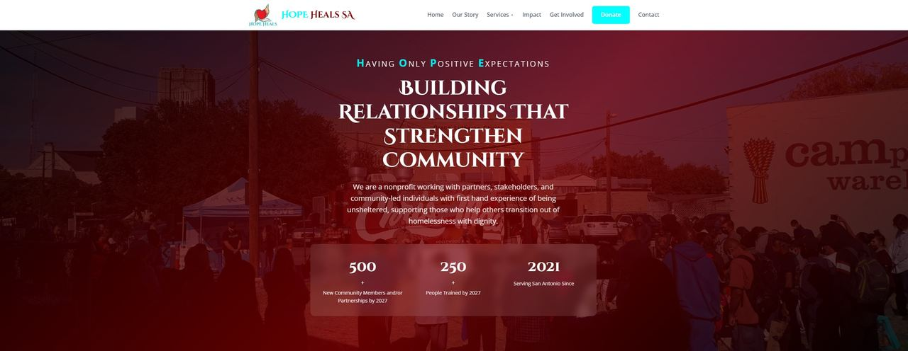

Featured Client Work
Rev. Dr. Doshie Piper Live
✦ Featured Client ProjectProblem: Her career spans work as a UIW professor, minister, and public speaker, but she had no central place to send people.
Built: Five-page professional website with intuitive navigation, scalable content architecture, and clear paths to her speaking, ministry, and academic work.
Visit Live Site
Hope Heals SA Live
✦ Capacity Building & Organizational WebsiteProblem: A growing organization needed a central digital home to communicate its mission, leadership, programs, and community impact.
Built: Complete organizational website with structured content, program pages, leadership section, and community impact documentation. The site is live; training and handoff support continue so the team can maintain it.
Visit Live SiteSouthern Charm BBQ & Catering Archived
✦ Catering Client SiteProblem: A local BBQ and catering business needed an online menu and inquiry presence.
Built: Website draft with menu, gallery, and contact/inquiry form, ready for client review and launch.
Archived demoApps Built for Real Communities
WasteNot Alexandria Archived
✦ Community Web AppProblem: Local families miss grocery deals, while stores throw out near-expired food.
Built: Community grocery deal app that surfaces last-chance discounts to neighborhood shoppers in Alexandria, helping close the loop between waste and need.
Archived demoCurveLink Functional Prototype
✦ Self-Initiated SMS ConceptIdea: Give apartment and community managers a faster way to reach residents with important updates.
Built: Marcus-owned functional prototype for outage notices, package alerts, event updates, and resident messages. It was developed independently as a concept for a future management pitch, not as a commissioned client project.
Visit Live AppTools I Built to Build Faster
LaunchFrame Beta
✦ Website Planning GeneratorProblem: Every new client project starts with the same scoping questions, and disorganized answers slow projects down.
Built: Walks small business owners through structured questions and outputs a clear project brief: sitemap, pages needed, content checklist, and launch goals.
Get Early AccessShowcaseFlow Beta
✦ Project Showcase GeneratorProblem: Showing off a finished project shouldn't take a full day of formatting and screenshots.
Built: Drop in screenshots, links, and a few notes to get back a clean, sharable project page ready to send to a client or post anywhere.
Get Early Access